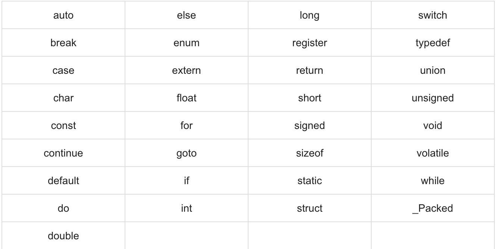

C Öğreticisi 2 (Temel Sözdizimi)
Bu yazılar https://www.tutorialspoint.com/cprogramming/ adresindeki yazı dizilerinin çevirileridir.
Bir C programının temel yapısını gördünüz, bu nedenle C programlama dilinin diğer temel yapı taşlarını anlamak kolay olacaktır.
C Belirteçleri
Bir C programı çeşitli belirteçlerden oluşur. Bir belirteç, bir anahtar kelime, bir tanımlayıcı, bir sabit, bir karakter katarı(string) veya bir semboldür. Örneğin, aşağıdaki C ifadesi beş belirteçten oluşur -
printf(“Hello, World! \n”);
Bireysel belirteçler -
printf
(
“Hello, World! \n”
)
;
Noktalı Virgül
Bir C programında, noktalı virgül bir deyim sonlandırıcıdır. Bunun anlamı, her bir ifadenin noktalı virgülle bitmesi gerektiğidir. Aşağıda verilen iki farklı ifade bir mantıksal varlığın sonunu belirtir. -
printf(“Hello, World! \n”);
return 0;
Yorumlar
Yorumlar, C programınızdaki metinlere yardım etmeye benzer ve derleyici tarafından göz ardı edilir. / * İle başlarlar ve aşağıda gösterildiği gibi * / karakterleriyle son bulurlar -
/* my first program in C */
Yorumlar içinde yorumlarınız olamaz ve bunlar bir katar(string) veya karakter değişmezleri içinde gerçekleşmez.
Tanımlayıcılar
Bir C tanımlayıcısı, bir değişkeni, işlevi veya diğer herhangi bir kullanıcı tanımlı öğeyi tanımlamak için kullanılan bir addır. Bir tanımlayıcı, A’dan Z’ye bir harf, a’dan z’ye bir harf veya ‘_’ alt çizgisi, ardından sıfır veya daha fazla harf, alt çizgi ve rakam (0 ila 9) ile başlar.
C, @, $ ve% gibi noktalama işaretlerini tanımlayıcılara izin vermez. C büyük / küçük harfe duyarlı bir programlama dilidir. Dolayısıyla, İnsangücü ve insangücü C’de iki farklı tanımlayıcıdır. İşte kabul edilebilir tanımlayıcılardan bazıları. -
mohd zara abc move_name a_123
myname50 _temp j a23b9 retVal
Anahtar Kelimeler
Aşağıdaki liste, C’deki ayrılmış kelimeleri gösterir. Bu ayrılmış kelimeler, sabitler veya değişkenler veya diğer tanımlayıcı isimler olarak kullanılamaz.
C’de Whitespace
Yalnızca boşluk içeren, yalnızca boşluk içeren bir satır boş satır olarak bilinir ve bir C derleyicisi bunu tamamen göz ardı eder.
Whitespace, C’de boşlukları, sekmeleri, yeni satır karakterlerini ve yorumları tanımlamak için kullanılan bir terimdir.
Whitespace ifadesi bir ifadenin bir bölümünü diğerinden ayırır ve derleyicinin int gibi bir ifadedeki bir öğenin nerede biteceğini ve bir sonraki öğenin nerede başladığını tanımlamasını sağlar. Bu nedenle, aşağıdaki ifadede -
int age;
Derleyicinin bunları ayırt edebilmesi için int ve yaş arasında en az bir boşluk karakteri (genellikle boşluk) bulunmalıdır. Öte yandan, aşağıdaki ifadede -
fruit = apples + oranges; // toplam meyveyi bulur
meyve ve = veya veya = ve elmalar arasında boşluk olması gerekmez, ancak eğer okunabilirliği artırmak istiyorsanız bir kısmını eklemekte özgürsünüz.
https://tutorialspoint.com/cprogramming/c_basic_syntax.htm